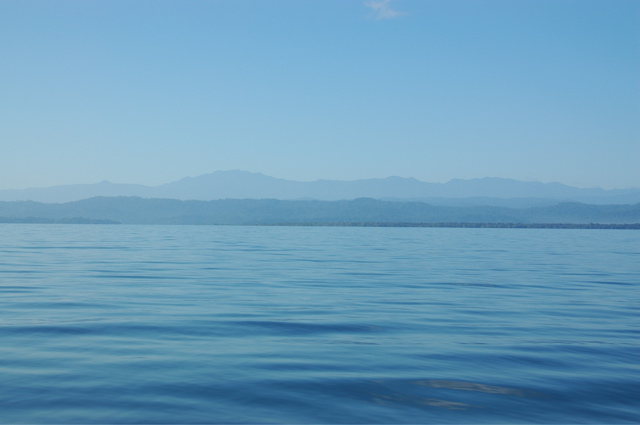

Unser nächstes Ziel lautet Bocas del Toro, eine Inselgruppe in der nord-westlichen Ecke Panamas. Bei so viel Tropen darf die Karibik natürlich nicht fehlen. Bis dahin ist es von Bahia Drake aus allerdings ein weiter Weg. Zu weit, wie wir feststellen mussten.
Um sieben Uhr morgens gings los: Von Drake nach Sierpe mit dem Boot, von Sierpe nach Palmar Norte mit dem Taxi, von dort nach Paso Canoas mit dem Bus.
Der Grenzübergang zu Panama ist ein besonders schöner Ort. Statt den üblichen einsamen Brücken, die zwei Grenzstationen trennen, gibt es hier ein Gewimmel von Dreck und Geschäften. Wer bis dahin noch nicht abgeschreckt ist, bekommt von den panamaischen Grenzbeamten oder vor allem deren Vorschriften den Rest.
Die Panameños finden ihr Land nämlich so wunderbar, dass ihr Leben von der Angst geprägt ist, dass es Gästen genauso ergehen wird und sie daher nur ungern wieder verschwinden werden. Gleichzeitig möchten sie die Gäste natürlich an den Füßen packen und ausschütteln. Daher die zwei Zutaten für die erfolgreiche Einreise: Ein Rückreiseticket und 500 $ in bar.
Natürlich hatten wir beides nicht. Und der Grenzbeamte war trotz unseres Rückflugtickets von San Jose nach Frankfurt nicht überzeugt, dass wir nicht doch vielleicht bleiben wollten. Um unseren Guten Willen zu beweisen brauchten wir noch ein Busticket von Panama nach San Jose, das auf unseren Namen ausgestellt ist und auch noch über denselben Grenzübergang führt. Unglaublich! Schließlich wollen wir das Land im Norden wieder verlassen und nicht hier im Süden. Erklärungen halfen nicht, der Beweis musste her. Also haben wir uns ein verdammtes Busticket gekauft und präsentiert. Nach unseren Bargeldbeständen haben sie glücklicherweise nicht gefragt.
Nach knapp einer Stunde Gerangel und Gerenne waren wir endlich in Panama und schon wieder im Bus. Von Paso Canoas nach David, von David nach Changinola.
Die letzte Fahrt hat leider sechs Stunden gedauert, so dass wir gar kein Boot nach Bocas del Toro mehr bekommen konnten. Dafür durften wir das menschenleere, bergige und vor allem endlose Inland Panamas durchfahren. Da der Fahrer sich bei Tempo 30 am sichersten fühlte ist die Sonne so bald untergegangen, dass wir davon gar nicht so viel mitbekommen haben.
Changinola war um 22 Uhr glücklicherweise noch auf den Beinen. Ein Hotel war schnell gefunden. Dann konnten wir endlich Frühstück, Mittagessen und Abendessen nachholen.
21/12/2006
Nachdem wir uns gestern so durch die Lande gekämpft haben, war es heute nur noch ein Katzensprung. Mit einem kleinen Boot, das vom Gelände der Chiquita Plantagen (Finca 60) abfährt, sind wir durch einen sehr hübschen Kanal zum Meer gelangt. Die Landschaft erinnerte mit ihren Wasserhyazinthen an das Orinoco-Delta in Venezuela.

Bocas del Toro selbst ist ein kleiner Ort, der durchaus über touristische Infrastruktur verfügt. Hotels und Restaurants wechseln sich ab und zwischendurch gibt es sogar Internet-Cafes, so dass wir unsere Einträge mal nachholen können.
Unsere Unterkunft ist auf der kleinen Nachbarinsel Caranero, die mit den kleinen Wassertaxis zu erreichen ist, die hier überall durch die Gegend fahren. Davon werden wir in den nächsten Tagen noch viel Gebrauch machen, da es hier einige schöne Strände gibt. Tauchen können soll man hier auch.
Bevor es zu spät ist, wünschen wir Euch noch frohe Weihnachten.